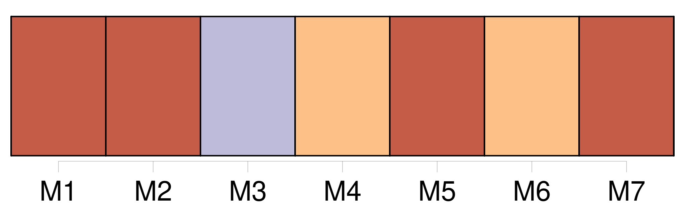
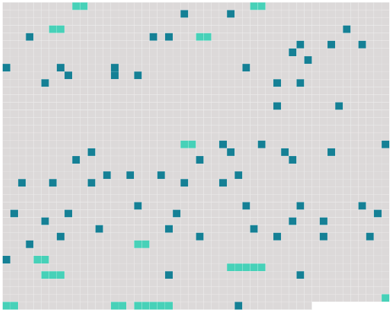

Longueur nb maillons : 78 mentions |
  |
XXX [2 phrases] Tu connais [Gilberte] , ou plutôt tu crois [la] connaître ; mais connaît -on jamais les femmes?? [2 phrases]
Je n'ai pas à t'apprendre que [ta cousine] est religieuse à l'extrême, élevée par les Dames blanches ou noires de Nancy. [1 phrases] Ce que tu ignores, sans doute, c'est qu' [elle] est exaltée en tout comme en dévotion. [Sa] tête s'envole à la façon d'une feuille cabriolant dans le vent ; et [elle] est [femme] , ou plutôt [jeune fille] , plus qu'aucune autre, tout de suite attendrie ou fâchée, partant au galop pour l'affection comme pour la haine, et revenant de la même façon ; et jolie... [2 phrases] Donc, nous étions fiancés ; je [l'] adorais comme je [l'] adore encore.
[Elle] semblait m'aimer. [1 phrases] Comme je devais partir le lendemain, je courus faire mes adieux à [Gilberte] et dire pourquoi je ne dînerais point chez mes futurs beaux-parents le mercredi, mais seulement le vendredi, jour de mon retour. [2 phrases] Quand je parlai de mon départ, je vis une larme dans [ses] yeux ; mais quand j'annonçai ma prochaine revenue, [elle] battit aussitôt des mains et s' [écria] : « Quel bonheur!! vous [me] rapporterez quelque chose ; presque rien, un simple souvenir, mais un souvenir choisi pour [moi] [2 phrases]
» [1 phrases] » Puis, après un nouveau silence, [elle] dit à mi-voix, les yeux baissés : « Si cela ne vous coûte rien, comme argent, et si c'est bien ingénieux, bien délicat, [je] vous... [je] vous embrasserai. [7 phrases] Le souvenir de [Gilberte] me traversa le coeur ; je connaissais [sa] dévotion fanatique. [10 phrases]
Et j'allai chez [ma fiancée] Dès qu' [elle] me vit entrer, [elle] s'élança devant moi, anxieuse et souriante : « Qu'est -ce que vous [m'] avez rapporté??
» Je me laissai prier, supplier même ; et, quand je [la] sentis éperdue de curiosité, je [lui] offris le saint médaillon. [Elle] demeura saisie de joie. [3 phrases] » Et [elle] baisait passionnément la boîte. [1 phrases]
Mais une inquiétude [l'] effleura, qui devint aussitôt une crainte horrible ; et, [me] fixant au fond des yeux : [5 phrases]
Une idée folle me traversa l'esprit ; je répondis à voix basse, d'un ton mystérieux :
» [1 phrases] [vous] l'avez volée. [2 phrases]
» [Son] coeur battait ; [elle] défaillait de bonheur ; [elle] murmura : [1 phrases] pour [moi] [1 phrases] dites [-moi] tout!! [4 phrases]
Je n'étais pas fâché de [lui] faire savoir que le médaillon m'avait coûté cinq cents francs. Mais [elle] ne songeait guère à cela ; [elle] m'écoutait frémissante, en extase. [Elle] murmura : « Comme [je] vous aime!!
» et se [laissa] tomber dans mes bras. Remarque ceci : J'avais commis, pour [elle] , un sacrilège. [1 phrases] [Elle] m'adorait pour cela ; me [trouvait] tendre, parfait, divin. [2 phrases]
[Elle] avait organisé dans [sa] chambre une sorte de chapelle magnifique pour y placer cette parcelle de côtelette qui m'avait fait accomplir, croyait [-elle] , ce divin crime d'amour ; et [elle] s'exaltait là devant, soir et matin. Je [l'] avais priée du secret, par crainte, disais -je, de me voir arrêté, condamné, livré à l'Allemagne.
Elle [m'] avait tenu parole. Or, voilà qu'au commencement de l'été, un désir fou [lui] vint de voir le lieu de mon exploit.
[Elle] pria tant et si bien [son] père ( sans lui avouer [sa] raison secrète ) qu'il [l'] emmena à Cologne en me cachant cette excursion, selon le désir de [sa fille] [4 phrases] A l'aspect de la chasse, [elle] avait compris soudain [ma supercherie] , mon mensonge, et, en même temps, ma réelle innocence. [1 phrases]
Mais du moment que je n'avais pas fracturé un lieu sacré et plongé ma main profane au milieu de restes vénérables, je n'étais plus digne de [ma blonde et délicate fiancée] [1 phrases]
J'eus beau prier, supplier, rien ne put attendrir [la belle dévote] [1 phrases]
Or, la semaine dernière, [sa] cousine, qui est aussi la tienne, Mme d'Arville, me fit prier de [la] venir trouver. [9 phrases] Mme d'Arville, qui prend la chose au sérieux, m'a dit : « [Cette pauvre Gilberte] ne se mariera jamais.
»
Je t'en supplie, fais qu' [elle] ne soit pas la onze mille et unième. |
 |
La ressource peut être téléchargée sur la page Ortolang
Si vous avez des questions ou vous voyez des erreurs, merci d'envoyer un mail à silvia.federzoni89@gmail.com
Site développé par S. Federzoni (contact)